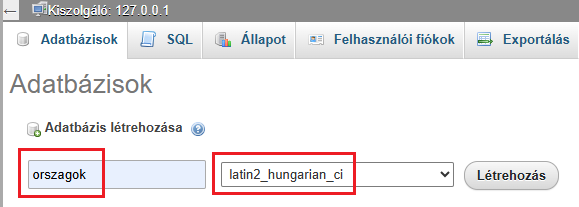
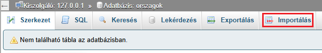
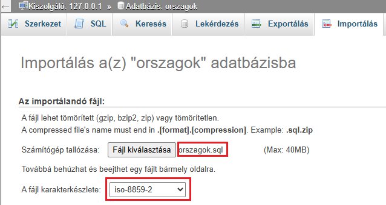

Töltsd le az orszagok.sql állományt.
Hozd létre az adatbázist orszagok néven a XAMPP felületen. A karakterkészlet legyen: latin2_hungarian_ci.

Menj az Importálás fülre.

Keresd meg a letöltött orszagok.sql állományt , és állítsd be a fájl karakterkészletét iso-8859-2-re.
